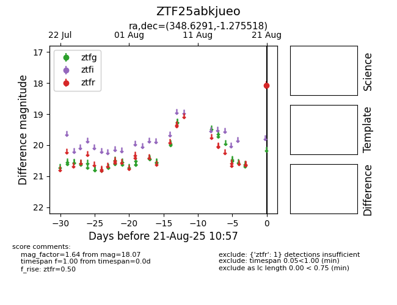

Target ZTF25abkjueo at 2025-08-21 10:57, see:
FINK: fink-portal.org/ZTF25abkjueo
Lasair: lasair-ztf.lsst.ac.uk/objects/ZTF25abkjueo
ALeRCE: alerce.online/object/ZTF25abkjueo
alt names
ZTF25abkjueo (ztf,alerce)
coordinates:
equatorial (ra, dec) = (348.6291,-1.27552)
galactic (l, b) = (76.9081,-55.23839)
photometry
last ztfr=18.07
1 ztfr detections
